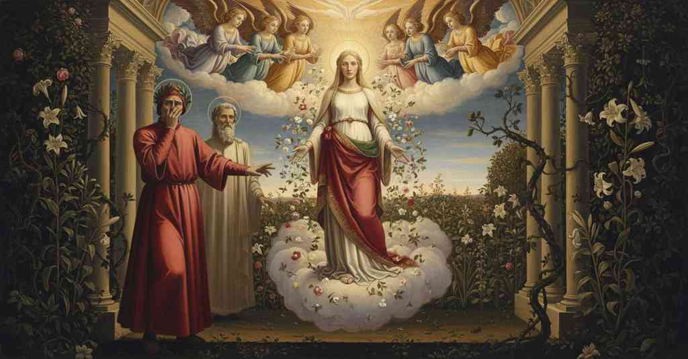

Purgatorio — Canto 30

Beatrice appears in the divine procession, causing Virgil to vanish, and then sternly rebukes a weeping Dante for his past sins, demanding his tearful repentance. ついに現れたベアトリーチェは、ウェルギリウスが去った語り手をその罪ゆえに厳しく叱責し、悔い改めを促す。
1
Quando il settentrïon del primo cielo,
When the septentrion of the first heaven,
第一の天の北斗七星が、
2
che né occaso mai seppe né orto
that knew neither setting nor rising
それは没することも昇ることも知らず
3
né d’altra nebbia che di colpa velo,
nor a veil of any mist other than that of sin,
罪以外のいかなる霧にも覆われず、
4
e che faceva lì ciascun accorto
and which made everyone there aware
そして、そこで一人ひとりに気づかせた
5
di suo dover, come ’l più basso face
of his duty, as the lower one does
己の務めを、あたかも下界の北斗が
6
qual temon gira per venire a porto,
for him who turns the helm to come to port,
舵を操り港へ導く者にするように、
7
fermo s’affisse: la gente verace,
fixed itself motionless: the truthful people,
ぴたりと止まった。まことの民は、
8
venuta prima tra ’l grifone ed esso,
who came first between the griffin and it,
グリフォンとそれとの間に先に来て、
9
al carro volse sé come a sua pace;
turned to the chariot as to their peace;
車の方を自らの安らぎとして向き直った。
10
e un di loro, quasi da ciel messo,
and one of them, as if sent from heaven,
そして彼らの一人が、あたかも天より遣わされ、
11
‘Veni, sponsa, de Libano’ cantando
‘Veni, sponsa, de Libano’ singing
「来たれ、レバノンの花嫁よ」と歌いながら
12
gridò tre volte, e tutti li altri appresso.
cried out three times, and all the others after.
三度叫び、他のすべての者もそれに続いた。
13
Quali i beati al novissimo bando
As the blessed at the final call
最後の呼び声に幸いなる者たちが
14
surgeran presti ognun di sua caverna,
will rise quickly each from his cavern,
皆それぞれの墓から速やかに立ち上がり、
15
la revestita voce alleluiando,
with re-clothed voice shouting hallelujah,
再びまとった声でアレルヤと唱えるように、
16
cotali in su la divina basterna
such upon the divine chariot
そのように神聖な車の上には
17
si levar cento, ad vocem tanti senis,
a hundred rose up, ad vocem tanti senis,
百の者が立ち上がった、かくも偉大な長老の声に合わせ、
18
ministri e messaggier di vita etterna.
ministers and messengers of eternal life.
永遠の生命の使いにして使者たちが。
19
Tutti dicean: ‘Benedictus qui venis!’,
All were saying: ‘Benedictus qui venis!’,
皆は言った、「祝福にあれ、来たれる者よ！」と、
20
e fior gittando e di sopra e dintorno,
and throwing flowers both above and all around,
そして上からも周りからも花を投げながら、
21
‘Manibus, oh, date lilïa plenis!’.
‘Manibus, oh, date lilïa plenis!’.
「おお、満たされた手で百合を与えよ！」。
22
Io vidi già nel cominciar del giorno
I have seen before at the beginning of the day
私はかつて夜明けに見たことがある
23
la parte orïental tutta rosata,
the eastern part all rosy,
東の空がすべて薔薇色に染まり、
24
e l’altro ciel di bel sereno addorno;
and the rest of the sky with fair serenity adorned;
他の空は美しい晴天に飾られるのを。
25
e la faccia del sol nascere ombrata,
and the face of the sun rise shaded,
そして太陽の顔が影を帯びて昇り、
26
sì che per temperanza di vapori
so that through a tempering of vapors
そのため蒸気の加減によって
27
l’occhio la sostenea lunga fïata:
the eye could sustain it for a long while:
目は長い間それに耐えることができた。
28
così dentro una nuvola di fiori
so within a cloud of flowers
そのように、花の雲の中に
29
che da le mani angeliche saliva
that from the angelic hands was rising
天使たちの手から立ち上り
30
e ricadeva in giù dentro e di fori,
and falling back down within and without,
内にも外にも下へと降り注ぐ、
31
sovra candido vel cinta d’uliva
over a white veil, crowned with olive
白いヴェールの上にオリーブを冠し
32
donna m’apparve, sotto verde manto
a lady appeared to me, under a green mantle
一人の貴婦人が私に現れた、緑のマントの下に
33
vestita di color di fiamma viva.
dressed in the color of living flame.
生ける炎の色をまとって。
34
E lo spirito mio, che già cotanto
And my spirit, which for so long
そして私の魂は、すでにそれほど
35
tempo era stato ch’a la sua presenza
a time had been that in her presence
長い間、彼女の前にあって
36
non era di stupor, tremando, affranto,
had not been with stupor, trembling, overcome,
驚愕に震え、打ちのめされることはなかったが、
37
sanza de li occhi aver più conoscenza,
without having more knowledge from the eyes,
目にはもはや何の認識もなかったが、
38
per occulta virtù che da lei mosse,
through a hidden power that moved from her,
彼女から発せられる隠れた力によって、
39
d’antico amor sentì la gran potenza.
felt the great power of the ancient love.
古の愛の大いなる力を感じたのだ。
40
Tosto che ne la vista mi percosse
As soon as the high virtue struck my sight
視界が私を打ったとたんに
41
l’alta virtù che già m’avea trafitto
that had already pierced me
かつて私を貫いたその高き力、
42
prima ch’io fuor di püerizia fosse,
before I was out of boyhood,
私がまだ少年期を脱する前に、
43
volsimi a la sinistra col respitto
I turned to the left with the reflex
私は左を向いた、あの敬意をもって
44
col quale il fantolin corre a la mamma
with which a little child runs to his mother
幼子が母のもとへ駆け寄るような、
45
quando ha paura o quando elli è afflitto,
when he is afraid or when he is afflicted,
恐れている時、あるいは悲しんでいる時に、
46
per dicere a Virgilio: ‘Men che dramma
to say to Virgil: ‘Less than a dram
ウェルギリウスに言うために、「一滴にも満たぬ
47
di sangue m’è rimaso che non tremi:
of blood is left in me that does not tremble:
血も残っておりません、震えぬものは。
48
conosco i segni de l’antica fiamma’.
I know the signs of the ancient flame’.
私は古の炎のしるしを知っています」。
49
Ma Virgilio n’avea lasciati scemi
But Virgil had left us deprived
しかしウェルギリウスは我々を置き去りにした
50
di sé, Virgilio dolcissimo patre,
of himself, Virgil, sweetest father,
彼自身を、ウェルギリウス、いと甘美なる父よ、
51
Virgilio a cui per mia salute die’mi;
Virgil to whom I gave myself for my salvation;
ウェルギリウス、我が救いのために身を委ねた御方。
52
né quantunque perdeo l’antica matre,
nor all that our ancient mother lost,
古の母が失ったものすべてをもってしても、
53
valse a le guance nette di rugiada,
availed my cheeks, clean of dew,
露に清められた私の頬を
54
che, lagrimando, non tornasser atre.
from turning dark again with weeping.
涙を流し、再び汚させぬことはできなかった。
55
«Dante, perché Virgilio se ne vada,
“Dante, because Virgil is gone,
「ダンテよ、ウェルギリウスが去ったからといって、
56
non pianger anco, non piangere ancora;
do not weep yet, do not weep yet;
まだ泣いてはならぬ、まだ泣いてはならぬ。
57
ché pianger ti conven per altra spada».
for you must weep for another sword.”
お前は別の剣のために泣かねばならぬのだから」。
58
Quasi ammiraglio che in poppa e in prora
Like an admiral who on poop and prow
さながら提督が、船尾と船首に
59
viene a veder la gente che ministra
comes to see the men who serve
来て、他の船で働く者たちを
60
per li altri legni, e a ben far l’incora;
on the other ships, and encourages them to do well;
見て、善く務めるよう励ますように、
61
in su la sponda del carro sinistra,
on the left bank of the chariot,
車の左の縁の上に、
62
quando mi volsi al suon del nome mio,
when I turned at the sound of my own name,
私が我が名の響きに振り向いた時、
63
che di necessità qui si registra,
which of necessity is registered here,
それはやむを得ずここに記されるものだが、
64
vidi la donna che pria m’appario
I saw the lady who had first appeared to me
私は見た、先に私に現れた貴婦人が
65
velata sotto l’angelica festa,
veiled beneath the angelic festival,
天使たちの祝祭の下にヴェールを被り、
66
drizzar li occhi ver’ me di qua dal rio.
direct her eyes toward me from across the river.
川のこちら側から私の方へ目を向けるのを。
67
Tutto che ’l vel che le scendea di testa,
Although the veil that came down from her head,
頭から垂れるヴェールが、
68
cerchiato de le fronde di Minerva,
encircled by the boughs of Minerva,
ミネルヴァの葉で縁どられていたが、
69
non la lasciasse parer manifesta,
did not let her appear distinctly,
彼女の姿をはっきりと見せなかったとはいえ、
70
regalmente ne l’atto ancor proterva
royally, still haughty in her manner,
王のように、その態度はなおも厳しく
71
continüò come colui che dice
she continued like one who speaks
続けた、あたかも語る者のように、
72
e ’l più caldo parlar dietro reserva:
and holds back his warmest words:
そして最も熱い言葉を後に取っておくように。
73
«Guardaci ben! Ben son, ben son Beatrice.
“Look at us well! I am, I am Beatrice.
「我をよく見よ！ まさしく、まさしく私はベアトリーチェ。
74
Come degnasti d’accedere al monte?
How did you deign to ascend the mountain?
よくもこの山に登ることをお許しになったものか。
75
non sapei tu che qui è l’uom felice?».
Did you not know that here man is happy?”.
ここで人は幸福であることを知らなかったのか」。
76
Li occhi mi cadder giù nel chiaro fonte;
My eyes fell down to the clear fount;
私の目は澄んだ泉へと落ちた。
77
ma veggendomi in esso, i trassi a l’erba,
but seeing myself in it, I drew them to the grass,
しかしそこに自分を見て、私は草へと目を移した、
78
tanta vergogna mi gravò la fronte.
so much shame weighed upon my brow.
それほど多くの恥が私の額に重くのしかかったからだ。
79
Così la madre al figlio par superba,
So a mother seems harsh to her son,
このように母は子に厳しく見えるものだ、
80
com’ ella parve a me; perché d’amaro
as she seemed to me; because with bitterness
彼女が私にそう見えたように。なぜなら苦い
81
sente il sapor de la pietade acerba.
one tastes the flavor of stern pity.
未熟な慈悲の味を感じるからだ。
82
Ella si tacque; e li angeli cantaro
She fell silent; and the angels sang
彼女は黙った。そして天使たちは歌った
83
di sùbito ‘In te, Domine, speravi’;
suddenly ‘In you, Lord, I have hoped’;
にわかに「主よ、われ汝に望みを置けり」と。
84
ma oltre ‘pedes meos’ non passaro.
but beyond ‘my feet’ they did not pass.
しかし「わが足を」の先へは進まなかった。
85
Sì come neve tra le vive travi
Just as snow among the living rafters
あたかも生きた梁の間で雪が
86
per lo dosso d’Italia si congela,
along the spine of Italy freezes,
イタリアの背骨の上で凍りつき、
87
soffiata e stretta da li venti schiavi,
blown and packed by the Slavic winds,
スラブの風に吹かれ、固められ、
88
poi, liquefatta, in sé stessa trapela,
then, liquefied, it trickles into itself,
やがて、液化して、自らの内に滴り落ちるように、
89
pur che la terra che perde ombra spiri,
as long as the land that loses shadow breathes,
影を失う地が息吹を吹きかけるやいなや、
90
sì che par foco fonder la candela;
so that it seems fire melts the candle;
あたかも炎が蝋燭を溶かすかのように。
91
così fui sanza lagrime e sospiri
so was I without tears and sighs
そのように私は涙もなく溜息もなかった
92
anzi ’l cantar di quei che notan sempre
before the song of those who always tune
かの者たちが歌うまでは、彼らは常に音を合わせる
93
dietro a le note de li etterni giri;
behind the notes of the eternal spheres;
永遠の天球の調べに。
94
ma poi che ’ntesi ne le dolci tempre
but after I heard in the sweet harmonies
しかし、その甘美な調べの中に私が聞いたのは
95
lor compatire a me, par che se detto
their compassion for me, as if they had said:
私への同情であった、あたかも彼らが言ったかのように
96
avesser: ‘Donna, perché sì lo stempre?’,
‘Lady, why do you so unmake him?’,
「貴婦人よ、なぜかくも彼を打ちのめすのか？」と。
97
lo gel che m’era intorno al cor ristretto,
the ice that was constricted around my heart,
私の心の周りに固まっていた氷は、
98
spirito e acqua fessi, e con angoscia
became spirit and water, and with anguish
息と水となり、苦悩とともに
99
de la bocca e de li occhi uscì del petto.
from my mouth and my eyes it came forth from my breast.
口と目から胸のうちより流れ出た。
100
Ella, pur ferma in su la detta coscia
She, still firm on the aforesaid side
彼女は、なおも車の件の岸に
101
del carro stando, a le sustanze pie
of the chariot standing, to the pious substances
しっかりと立ち、敬虔な実体たちに
102
volse le sue parole così poscia:
turned her words thus afterward:
次いでこのように言葉を向けた。
103
«Voi vigilate ne l’etterno die,
“You watch in the eternal day,
「汝らは永遠の昼に見守っている、
104
sì che notte né sonno a voi non fura
so that neither night nor sleep steals from you
ゆえに夜も眠りも汝らから盗みはしない
105
passo che faccia il secol per sue vie;
a step the world makes along its ways;
世がその道筋で踏み出す一歩を。
106
onde la mia risposta è con più cura
wherefore my reply is with more care
それゆえ私の返答は、より注意を払って
107
che m’intenda colui che di là piagne,
that he who weeps over there may understand me,
向こうで泣くあの者に私を理解させるためであり、
108
perché sia colpa e duol d’una misura.
so that guilt and grief may be of one measure.
罪と悲しみが同じ尺度となるためである。
109
Non pur per ovra de le rote magne,
Not only through the work of the great wheels,
ただ大いなる天球の働きによってだけでなく、
110
che drizzan ciascun seme ad alcun fine
which direct each seed to some end
それは星々の巡り合わせに従って
111
secondo che le stelle son compagne,
according to how the stars are its companions,
各々の種子をある目的に向かわせるが、
112
ma per larghezza di grazie divine,
but through the bounty of divine graces,
神の恩寵の寛大さによっても、
113
che sì alti vapori hanno a lor piova,
which have for their rain such high vapors,
それはあまりに高い水蒸気をその雨とするため、
114
che nostre viste là non van vicine,
that our sights do not go near there,
我らの視線はそこに近づくこともできぬが、
115
questi fu tal ne la sua vita nova
this man was such in his new life
この者はその『新生』においてかくのごとき者であった
116
virtüalmente, ch’ogne abito destro
virtually, that every right disposition
天稟において、いかなる善き素質も
117
fatto averebbe in lui mirabil prova.
would have made in him a marvelous proof.
彼のうちに見事な実りをもたらしたであろう。
118
Ma tanto più maligno e più silvestro
But so much more malignant and more wild
しかし土地が良い地力を持つほど、
119
si fa ’l terren col mal seme e non cólto,
does the soil become with bad seed and uncultivated,
悪い種が蒔かれ、耕されなければ、
120
quant’ elli ha più di buon vigor terrestro.
the more it has of good earthly vigor.
それだけ悪質で荒れ果てたものとなる。
121
Alcun tempo il sostenni col mio volto:
For some time I sustained him with my face:
しばらくの間、私は私の顔で彼を支えた。
122
mostrando li occhi giovanetti a lui,
showing my youthful eyes to him,
若き日の眼差しを彼に見せ、
123
meco il menava in dritta parte vòlto.
with me I led him turned in the right direction.
私と共に、正しい方へと彼を導いた。
124
Sì tosto come in su la soglia fui
As soon as I was on the threshold
私が第二の年齢の閾に
125
di mia seconda etade e mutai vita,
of my second age and changed life,
達して生を変えるやいなや、
126
questi si tolse a me, e diessi altrui.
this man took himself from me, and gave himself to another.
この者は私から身を引き、他者に身を委ねた。
127
Quando di carne a spirto era salita,
When from flesh to spirit I had risen,
私が肉体から霊へと昇り、
128
e bellezza e virtù cresciuta m’era,
and beauty and virtue had grown in me,
美と徳が私に増し加わった時、
129
fu’ io a lui men cara e men gradita;
I was to him less dear and less pleasing;
私は彼にとってより愛しくなく、より好ましくなくなった。
130
e volse i passi suoi per via non vera,
and he turned his steps on a path not true,
そして彼はその歩みを偽りの道に向け、
131
imagini di ben seguendo false,
following false images of the good,
偽りの善の像を追い求めた、
132
che nulla promession rendono intera.
which render no promise in full.
それは何の約束も完全には果たさぬものを。
133
Né l’impetrare ispirazion mi valse,
Nor did it avail me to obtain inspirations,
私が霊感を授けようと願っても無駄であった、
134
con le quali e in sogno e altrimenti
with which in dream and otherwise
それによって夢でも、また別の方法でも
135
lo rivocai: sì poco a lui ne calse!
I called him back: so little did he care!
私は彼を呼び戻したが、彼はほとんど意に介さなかった！
136
Tanto giù cadde, che tutti argomenti
So far down he fell, that all arguments
彼はあまりに低く堕ちたので、あらゆる手段が
137
a la salute sua eran già corti,
for his salvation were already short,
彼の救済のためにはすでに及ばず、
138
fuor che mostrarli le perdute genti.
except showing him the lost people.
彼に失われた民を見せるほかはなかった。
139
Per questo visitai l’uscio d’i morti,
For this I visited the gate of the dead,
このために私は死者の門を訪れ、
140
e a colui che l’ha qua sù condotto,
and to him who has led him up here,
彼をここまで導いてきた者に、
141
li prieghi miei, piangendo, furon porti.
my prayers, weeping, were brought.
私の祈りは、涙ながらに届けられたのだ。
142
Alto fato di Dio sarebbe rotto,
The high fate of God would be broken,
神の高き定めは破られるであろう、
143
se Letè si passasse e tal vivanda
if Lethe were passed and such a food
もしレテ川を渡り、そのような糧が
144
fosse gustata sanza alcuno scotto
were tasted without some payment
いかなる償いもなしに味わわれるならば
145
di pentimento che lagrime spanda».
of repentance that sheds tears.”
涙を流す悔い改めの。」